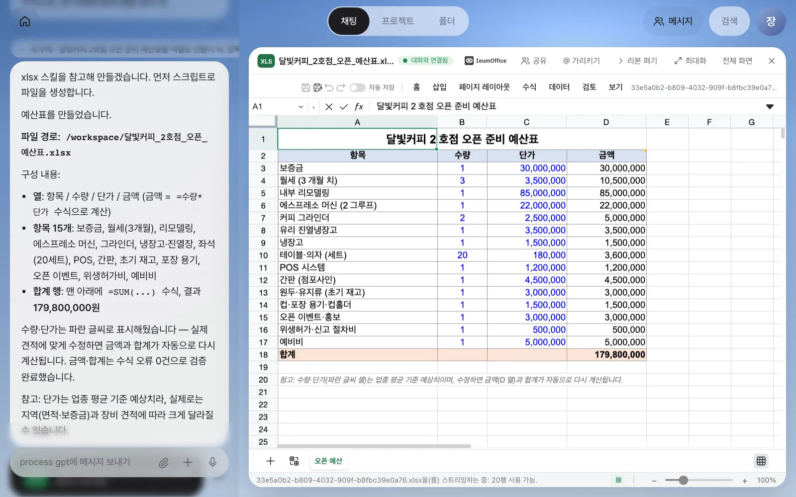
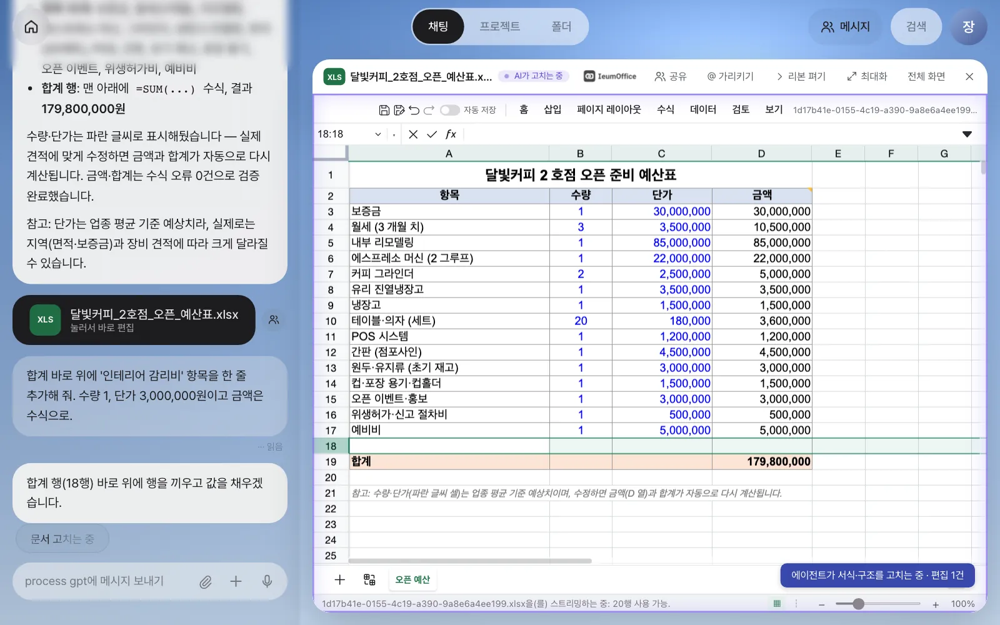
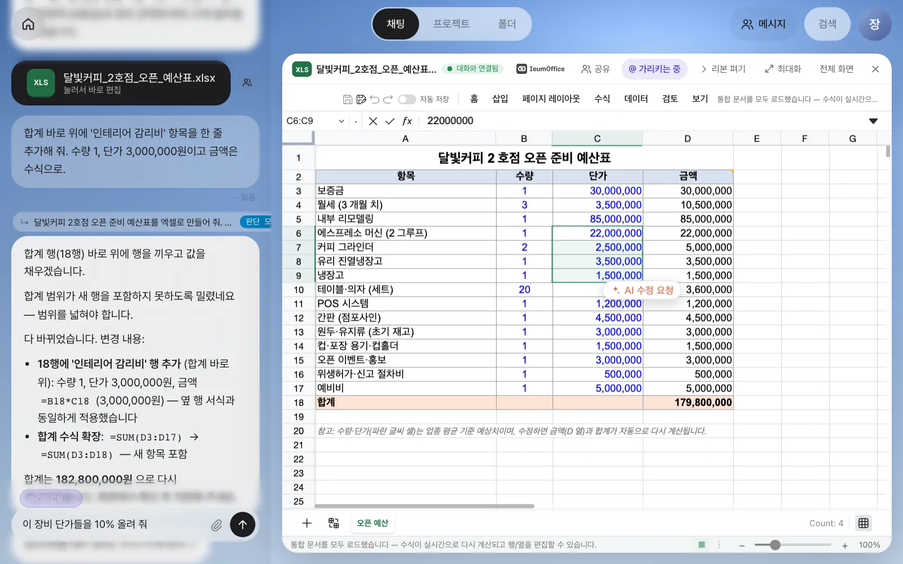
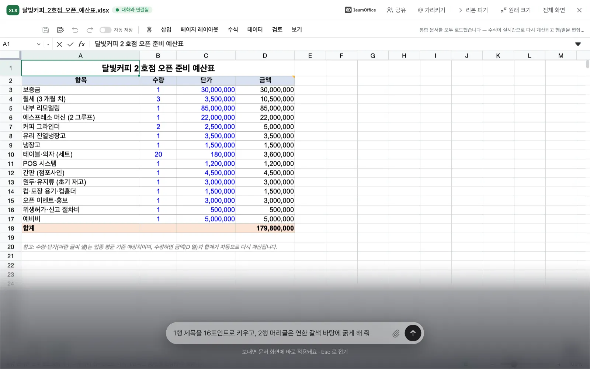
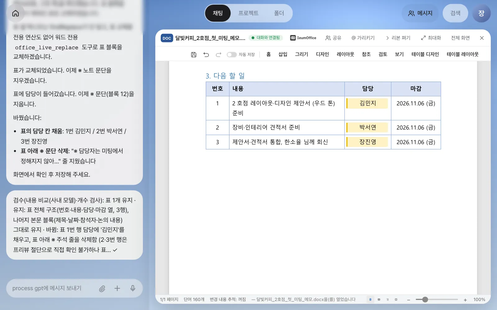

비서가 만든 엑셀·워드·한글 문서는 내려받지 않고 그 자리의 이음오피스 편집기에서 열립니다. 열린 문서는 대화와 연결되어, 채팅창에 적은 수정이 화면의 문서에 바로 적용됩니다. 표·셀 범위·그림을 눌러 가리키고 말하는 방법, 최대화 화면의 다이얼, 저장해서 편집본을 남기는 방법까지 따라 합니다.
왜 “그 자리에서” 여는가#
3장에서 체크리스트 워드 파일 카드를 누르면 화면 안에서 편집기가 열렸습니다. 2부의 첫 장인 이 장에서는 그 편집기에서 문서를 대화로 고치는 법을 익힙니다.
보통의 AI 채팅에서는 AI가 만든 문서를 내려받아 한글이나 엑셀로 열고, 고칠 곳이 생기면 다시 AI 창으로 돌아가 설명하고, 새 파일을 또 내려받습니다. 파일이 여러 개로 늘어나고, 어느 것이 최신인지 헷갈립니다.
Process GPT Lite는 문서를 원래 형식 그대로 채팅 옆의 편집기에서 엽니다. 편집기는 오픈소스 이음오피스(IeumOffice)이고, 한글(hwp·hwpx), 워드(docx), 엑셀(xlsx), 파워포인트(pptx), PDF를 다룹니다.
| 예전 방식 | Lite에서 |
|---|---|
| 내려받아 프로그램에서 열기 | 카드를 누르면 채팅 옆에 바로 열림 |
| “3행 단가를 바꿔 줘” → 새 파일 | 열린 문서가 눈앞에서 바뀜 |
| “표의 두 번째 칸…”처럼 말로 위치 설명 | 표·셀·그림을 눌러서 가리키기 |
| 버전 파일이 쌓임 | 저장하면 카드가 편집본을 가리키고, 이전 주소는 기록으로 남음 |
비서는 하나입니다. 편집기 자체에도 AI 버튼(예: 선택 영역 옆의 「AI 수정 요청」)이 있지만, 누르면 같은 채팅으로 이어집니다. 문서를 고치는 대화도 다른 대화와 같은 기록에 남습니다.
비서가 만든 파일은 그 대화의 작업 폴더에 저장되고, 채팅에는 이 대화에서 만들거나 고친 파일만 카드로 붙습니다. 비서가 표 모양 등을 참고하려고 열어 본 다른 문서가 내 대화에 카드로 섞여 들어오지 않습니다.
따라 하기 1 — 엑셀 예산표 만들고 열기#
장진영 팀장은 달빛커피 2호점 오픈 준비 비용부터 정리하기로 합니다. 채팅에 적습니다.
달빛커피 2호점 오픈 준비 예산표를 엑셀로 만들어 줘. 항목·수량·단가·금액 열을 두고, 금액은 수식으로, 맨 아래에 합계 행을 넣어 줘.
1분 안팎이면 답과 함께 XLS 카드가 생깁니다. 카드를 누르면 채팅은 왼쪽에 남고, 오른쪽에 편집기가 열립니다.

확인할 것: 채팅에 …예산표.xlsx 카드가 있고, 편집기 머리줄에 XLS 타일과 「대화와 연결됨」 배지가 보입니다. 금액 열을 눌렀을 때 수식 입력줄에 =B3*C3 같은 수식이 보이면 됩니다.
편집기 머리줄의 버튼:
| 버튼 | 하는 일 |
|---|---|
| 「공유」 | 이 문서를 팀원에게 보냅니다(14장) |
| 「@ 가리키기」 | 켜고 문서의 표·그림·문단·셀 범위를 누르면 입력창에 @멘션으로 들어갑니다 |
| 「리본 펴기」 | 처음엔 문서가 넓게 보이도록 리본을 접어 둡니다 |
| 「최대화」·「전체 화면」 | 문서를 크게 봅니다. 최대화하면 채팅은 다이얼로 접힙니다 |
따라 하기 2 — 채팅으로 바로 고치기#
문서가 열린 채로 채팅에 적습니다.
합계 바로 위에 '인테리어 감리비' 항목을 한 줄 추가해 줘. 수량 1, 단가 3,000,000원이고 금액은 수식으로.
배지가 「AI가 고치는 중」으로 바뀌고, 문서 테두리가 은은하게 빛나며 행이 끼워지는 모습이 그대로 보입니다. 아래쪽 알림에는 “에이전트가 서식·구조를 고치는 중 · 편집 1건”처럼 무슨 일을 하는지 나옵니다.

실습에서 비서는 행을 끼운 뒤 “합계 범위가 새 행을 포함하지 못하도록 밀렸네요”라며 합계 수식을 =SUM(D3:D17)에서 =SUM(D3:D18)로 스스로 넓혔고, 합계가 182,800,000원으로 다시 계산되었습니다. 이어서 짧은 검수 메모가 붙습니다.
검수(픽셀·개수 검사): 수식 17개 유지 ✓
검수는 고친 뒤에 “요청대로 됐는지, 빠진 것은 없는지”를 비서가 다시 확인하는 단계입니다. 9장에서 자세히 봅니다.
저장은 사람이 합니다
대화로 고친 내용은 열린 화면에 적용된 것이지 아직 파일에 저장된 것이 아닙니다. 저장하지 않고 닫으면 다시 열었을 때 고치기 전으로 돌아가므로, 마음에 들면 편집기 도구 막대의 저장 아이콘(엑셀·워드) 또는 ⌘S(한글)로 저장하세요.
따라 하기 3 — 눌러서 가리키기#
“에스프레소 머신부터 냉장고까지 단가”를 말로 설명하는 대신 직접 가리킵니다.
- 머리줄의 「@ 가리키기」를 켭니다. 「가리키는 중」으로 바뀝니다. (⌥ 키를 누른 채 클릭해도 됩니다.)
- 시트에서 C6부터 C9까지 끌어 선택합니다. 입력창 위에
@C6:C9칩이 생깁니다. - 이어서 적고 보냅니다.
이 장비 단가들을 10% 올려 줘

확인할 것: 보낸 메시지가 @C6:C9 이 장비 단가들을…으로 시작하고, 네 셀만 바뀝니다(실습: 22,000,000 → 24,200,000 등). 금액 열은 수식이라 자동으로 다시 계산됩니다.
가리킬 수 있는 대상은 편집기마다 다릅니다.
| 편집기 | 누르면 들어가는 멘션 |
|---|---|
| 엑셀 | 셀 범위 @C6:C9 |
| 워드 | 표 @표 1 (번호 · 내용 · 담당 ·…), 그림, 문단 |
| 한글 | 표 @표 1 (공간 구성), 그림 @이미지 1, 문단 |
따라 하기 4 — 최대화와 다이얼#
문서를 크게 보면서도 대화는 계속할 수 있습니다. 「최대화」를 누르면 채팅이 오른쪽 아래의 둥근 다이얼로 접힙니다. 다이얼을 누르면 화면 아래에 얇은 입력창이 펼쳐지고, “보내면 문서 화면에 바로 적용돼요 · Esc 로 접기”라는 안내가 붙습니다.
1행 제목을 16포인트로 키우고, 2행 머리글은 연한 갈색 바탕에 굵게 해 줘

보내면 입력창은 잠시 뒤 접히고, 다이얼 옆에 「작업하는 중」 → 「결과 검수하는 중」 알약이 떴다가, 비서의 답이 잠깐 겹쳐 보입니다. 실습에서는 머리글이 갈색(#D2B48C)으로 바뀌었습니다.
따라 하기 5 — 워드 표를 가리켜 채우기#
같은 방법이 워드에서도 됩니다. 첫 미팅 메모를 워드로 만들어 달라고 합니다.
달빛커피 2호점 첫 미팅 메모를 워드 문서로 만들어 줘. 참석자는 달빛커피 한소율 님과 우리 쪽 장진영·김민지, 논의 내용은 매장 크기(12m×9m), 좌석 40석, 우드 톤 인테리어, 다음 주 금요일까지 제안서·견적서 회신이야. 다음 할 일은 번호·내용·담당·마감 열이 있는 표로 정리해 줘.
DOC 카드를 열고, 「@ 가리키기」를 켠 뒤 “다음 할 일” 표의 칸을 누릅니다. @표 1 (번호 · 내용 · 담당 ·…) 칩이 들어가면 이어서 적습니다.
이 표의 담당 칸을 1번 김민지, 2번 박서연, 3번 장진영으로 채우고, 표 아래 ※ 줄은 지워 줘.

마지막으로 도구 막대의 저장 아이콘을 누릅니다. “저장했어요. 편집본이 원본 옆에 올라갔어요.”라는 알림이 뜨고, 편집기를 닫으면 채팅의 카드가 「편집본 · 눌러서 이어 편집」으로 바뀝니다. 원본은 지워지지 않고, 카드의 이전 주소는 기록으로 남습니다.
한글 문서는 9장에서
한글(hwpx)도 같은 방식으로 열리고 고쳐집니다. 표 칸 채우기, 글 바꾸기, 그림을 포토크래프트로 고쳐 제자리에 넣기는 9장의 설계 제안서로 따라 합니다. 이음오피스는 이음오피스 시연 영상에서도 볼 수 있습니다.
정리#
| 하고 싶은 일 | 방법 |
|---|---|
| 문서를 연다 | 채팅의 문서 카드를 누른다 |
| 내용을 고친다 | 문서를 연 채 채팅(또는 최대화 다이얼)에 적는다 |
| 위치를 정확히 짚는다 | 「@ 가리키기」 → 표·셀 범위·그림을 누른다 |
| 결과를 남긴다 | 저장 → 카드가 편집본을 가리킨다 |
다음 장에서는 같은 방식으로 도면·그림·소리·영상을 만들고 고치는 ArtCraft 앱 다섯 개를 봅니다(8장).
확인 문제
- 예산표를 연 채 “합계에 부가세 10% 행을 추가해 줘”라고 했습니다. 다음 날 같은 카드를 열었더니 부가세 행이 없습니다. 무엇을 빠뜨렸을까요?
- 엑셀의 B열 일부만 고치고 싶을 때, 말로 행 번호를 적는 것보다 나은 방법은?
- 최대화 화면의 다이얼에 적은 요청은 채팅 기록에 남을까요?
답
- 저장입니다. 대화로 고친 내용은 열린 화면에만 적용됩니다. 도구 막대의 저장 아이콘을 눌러야 편집본이 올라가고 카드가 그것을 가리킵니다.
- 「@ 가리키기」를 켜고 그 범위를 끌어 선택합니다. 입력창에
@B4:B9같은 칩이 들어가, 비서가 정확히 그 셀만 고칩니다. - 남습니다. 다이얼은 같은 채팅 입력창을 접어 둔 것일 뿐이라, 요청과 답, 검수 메모가 모두 채팅에 기록됩니다.